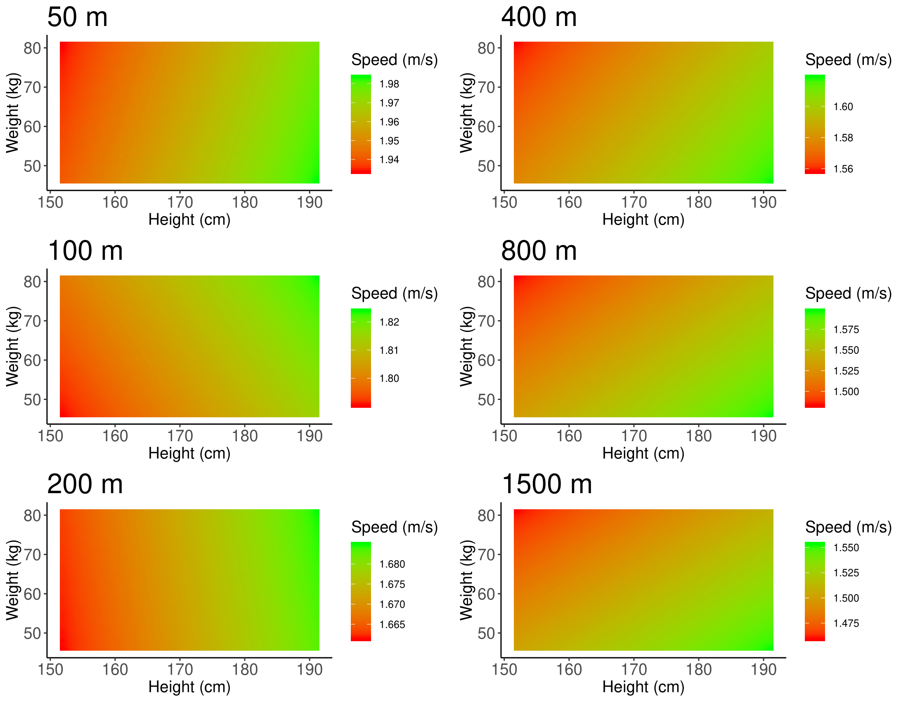
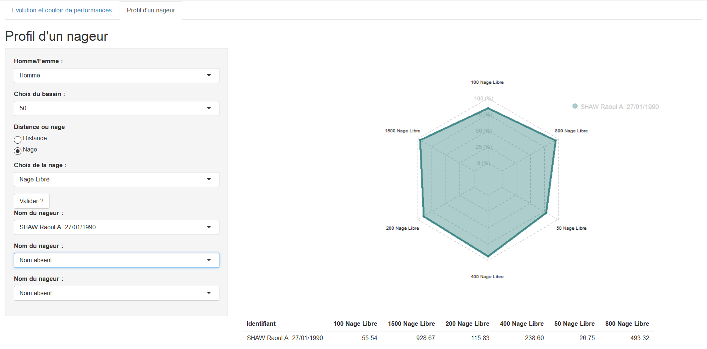
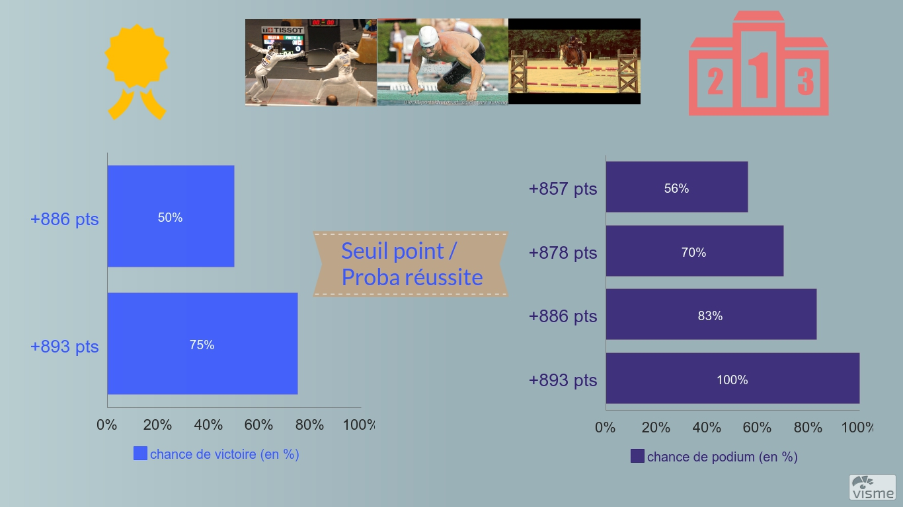
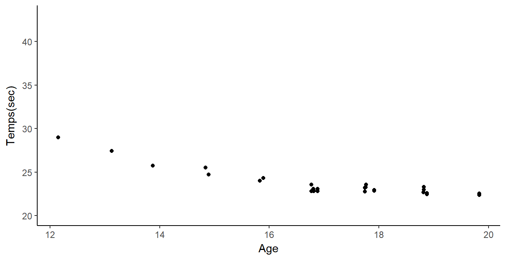
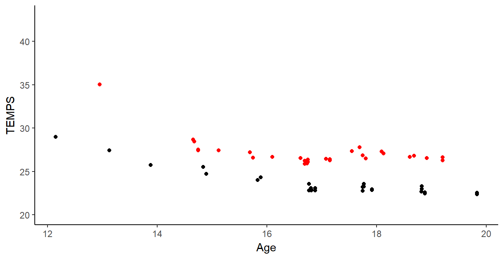

Quand la statistique et le sport font équipe
Arthur Leroy - MAP5, Université de Paris
Le corps statistique - La Gaîté Lyrique - 26/11/2020
Historique : aux origines
Professionnalisation du sport dans la fin du 20ème siècle, et émergence des problématiques:
- de préparation physique,
- de nutrition,
- d'analyses vidéos,
pour lesquelles des spécialistes intègrent parfois les staffs, ou collaborent avec les entraineurs.
Généralisation du recueil de données, d'abord par le biais des médias dans un but d'interaction avec les (télé)-spéctateurs.
Historique : débuts prommetteurs aux USA
Premiers pas remarqués des analyses statistiques dans les sports US à cette période. Notamment le cas emblématique de l'équipe baseball des Athletics d'Oakland:
Historique : l'essor technologique
Recueil plus massif de données avec la généralisation des divers capteurs et équipements technologiques:
- GPS,
- Accéléromètres,
- Cardio-fréquencemètres,
- Capteurs de chocs, ...
Utilisation des données brutes, sans analyses sophistiquées dans un premier temps.
Historique : l'essor méthodologique
Emergence forte de l'IA, notamment des méthodes de machine learning, dans de nombreuses applications à partir des années 2010.
Début de l'intérêt pour analyser les grandes bases de données précédemment recueuillies. Pour le sport de haut niveau, plusieurs axes sont généralement d'intérêt:
- analyse de la performance,
- analyse tactique et décisions dans les sports collectifs,
- prévention des blessures,
- identification des talents prometteurs.
Historique : une approche scientifique
Développement fort d'une approche scientifique de la performance dans les pays anglo-saxon (USA, GB, Australie).
Emergence de postes de sports scientists, voir de data analysts spécifiquement dédiés à l'étude des données sportives
Cas typique de la Grande Bretagne pour les JO 2012 et 2016.
Développement plus tardif dans les autres nations, notamment en France en vue des JO 2024
Historique : une approche scientifique
Plusieurs conséquences, notamment stratégiques, comme par exemple au basket avec le small ball.
Des changements dans l'organisation des évènements (tirage au sort UEFA), dans l'interraction avec les supporters (développement des fantasy), et bien d'autres.
Aujourd'hui il existe pour l'application de méthodes mathématiques aux problèmatiques sportives:
- des congrès mondiaux (Mathsport Athènes 2019),
- des groupes de recherche français (Stat et sport - SFdS),
- des groupes de recherche européens (S-training).
Stat & Sport : quelques cas concrets

Stat & Sport : quelques cas concrets

Stat & Sport : quelques cas concrets

Stat & Sport : de quoi a-t-on besoin ?

- de données pertinentes et 'propres',
Stat & Sport : de quoi a-t-on besoin ?

- de données pertinentes et 'propres',
- de problèmes (possiblement difficiles) bien posés,
Stat & Sport : de quoi a-t-on besoin ?

- de données pertinentes et 'propres',
- de problèmes (possiblement difficiles) bien posés,
- des méthodes adaptées pour y répondre.
Et en vrai, qu'est ce que ça donne ?

Connaître les limites et choisir ses batailles
- Possible résistance du monde sportif
- Science et sport, deux temporalités bien différentes
- A fait ses preuves sur des problèmes très spécifiques
- Certains sports sont fondamentalement non adaptés